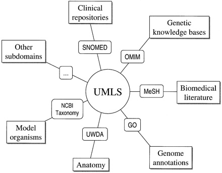

Introduction
UMLS stands for Unified Medical Language Systems. The project is developed and maintained by National Library of Medicine. Before UMLS, the biomedical community had diverse medical terminologies that captured the domain's vocabulary. For example, ICD (International Classification of Diseases), MeSH(Medical Subject Heading), SNOMED-CT (Systematized Nomenclature of Medicine- Clinical Terms),OMIM (Online Mendelian Inheritance in Man) and many other terminologies, both national and international.However, all these terminologies are disparate and not interoperable , i.e., they don't talk or understand each other. This has unintended effect on biomedical software applications as various applications use different terminologies. Now, the applications cannot communicate data among themselves, even though all the applications have ONE goal - patient care.
The UMLS project was initiated in 1986 to integrate various
disparate biomedical terminologies and provide a unified global
terminology. It provides a mapping structure among these diverse
terminologies allowing one (human or software)to translate
concepts among the various terminologies. Thus using UMLS, a
biomedical application using SNOMED-CT
can understand another software application using ICD terminology. For over more than 30
years, the UMLS system has integrated more than 60 families of
biomedical terminologies. Currently, UMLS holds 2.5 million
concepts or terms and over 12 million relations among these
concepts. Its scope is broader and its granularity finer than that
of any of its source vocabularies.

Figure
1: A higher-level view of UMLS, where UMLS is a composition of
various biomedical terminologies.
Reference
UMLS System
UMLS is comprised of three components: Metathesaurus, Semantic Networks and SPECIALIST Lexicon.
- The Metathesaurus forms the
base of the UMLS and holds all the concepts and relationships.
In simple terms, its a database which stores all the concepts
and respective information.
The Metathesaurus is organized by concept, and each concept has attributes defining its meaning and is linked to the corresponding concept names in the various source vocabularies. As different terminologies may use different names for the same concept (Heart Attack or Cardiac Arrest), then a common agreed term will be faithfully represented in the Metathesaurus to connect all the synonyms. Metathesaurus concepts can also link to resources outside of the database, for instance gene sequence databases. - The Semantic Network (SN) is
structure formed by semantic types that are connected using
semantic relationships. Semantic types can be considered as a
set of broad subject categories that are used for categorizing
the concepts stored in the Metathesaurus. For example, the terms
Fever, Cardiac Arrest and Malaria are
of type (or belong to category) 'Disease
or Syndrome'.
Each concept in the Metathesaurus is assigned one or more semantic types. For example, Fever is of semantic type (can be categorized as) 'Disease or Syndrome', 'Sign or Symptom', and 'Finding'. The semantic types are linked with to one another through semantic relationships.
UMLS rather has broad classification; there are 135 semantic types and 54 relationships. The major semantic types are organisms, anatomical structures, biologic function, chemicals, events, physical objects, and concepts or ideas. The primary link between semantic types is the "isa" link, establishing a hierarchy of types. The network also has 5 major categories of non-hierarchical (or associative) relationships, which constitute the remaining 53 relationship types. These are "physically related to", "spatially related to", "temporally related to", "functionally related to" and "conceptually related to".
Figure 2: A subset of UMLS Semantic Network.